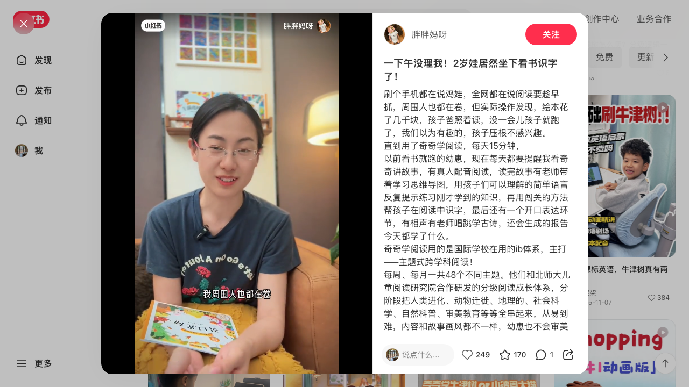
刷个手机都在说鸡娃，全网都在说阅读要趁早抓，周围人也都在卷，但实际操作发现，绘本花了几千块，孩子爸照着读，没一会儿孩子就跑了，我们以为有趣的，孩子压根不感兴趣。 直到用了奇奇学阅读，每天15分钟， 以前看书就跑的幼崽，现在每天都要提醒我看奇奇讲故事，有真人配音阅读，读完故事有老师带着学习思维导图，用孩子们可以理解的简单语言反复提示练习刚才学到的知识，再用闯关的方法帮孩子在阅读中识字，最后还有一个开口表达环节，有相声有老师唱跳学古诗，还会生成的报告今天都学了什么。 奇奇学阅读用的是国际学校在用的ib体系，主打——主题式跨学科阅读！ 每周、每月一共48个不同主题。他们和北师大儿童阅读研究院合作研发的分级阅读成长体系，分阶段把人类进化、动物迁徙、地理的、社会科学、自然科普、审美教育等等全串起来，从易到难，内容和故事画风都不一样，幼崽也不会审美疲劳。里面的字词、句型句式、古诗成语都是小学低年级必备的，每天阅读就能识字800+。我对比发现，里面学到的词句、句型句式、古诗成语都是小学低年级必备的，每周4天不同学科的阅读+1天复习，会讲好多种阅读方法，像故事三要素、流程图，耳濡目染，对他未来阅读很有...
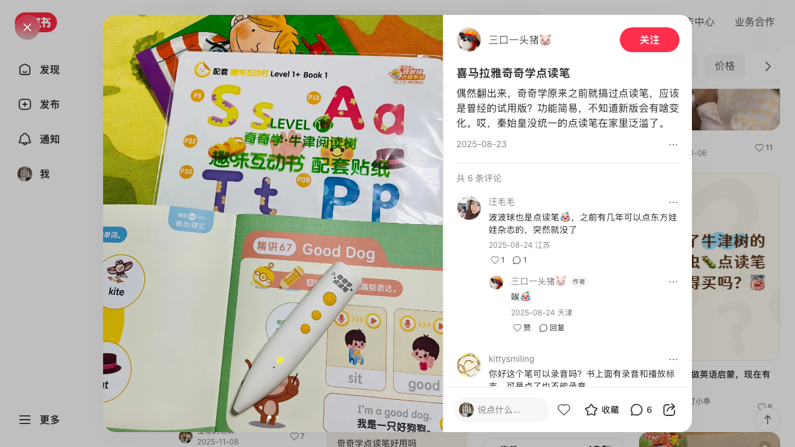
偶然翻出来，奇奇学原来之前就搞过点读笔，应该是曾经的试用版？功能简易，不知道新版会有啥变化。哎，秦始皇没统一的点读笔在家里泛滥了。
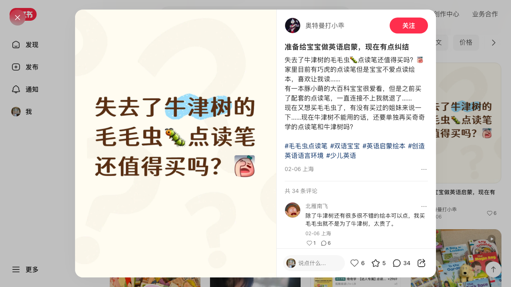
失去了牛津树的毛毛虫🐛点读笔还值得买吗？ 家里目前有巧虎的点读笔但是宝宝不爱点读绘本，喜欢让我读…… 有一本豚小萌的大百科宝宝很爱看，但是之前买了配套的点读笔，一直连接不上我就退了…… 现在又想买毛毛虫了，有没有买过的姐妹来说一下……现在牛津树不能用的话，还要单独再买奇奇学的点读笔和牛津树吗？ #毛毛虫点读笔 #双语宝宝 #英语启蒙绘本 #创造英语语言环境 #少儿英语
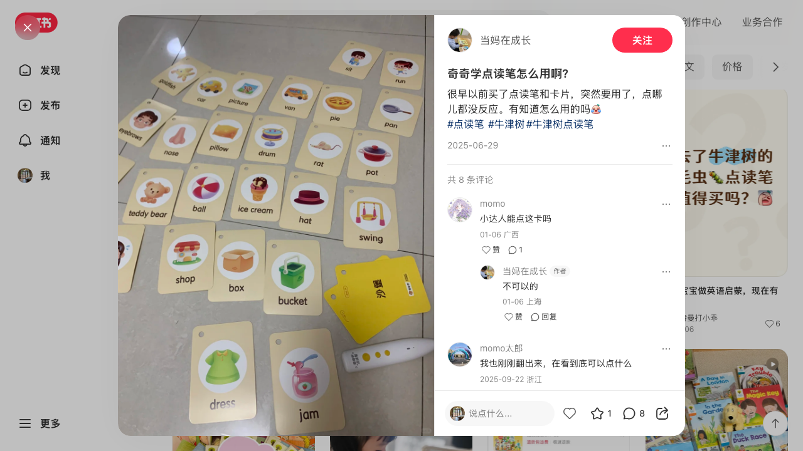
很早以前买了点读笔和卡片，突然要用了，点哪儿都没反应。有知道怎么用的吗 #点读笔 #牛津树#牛津树点读笔
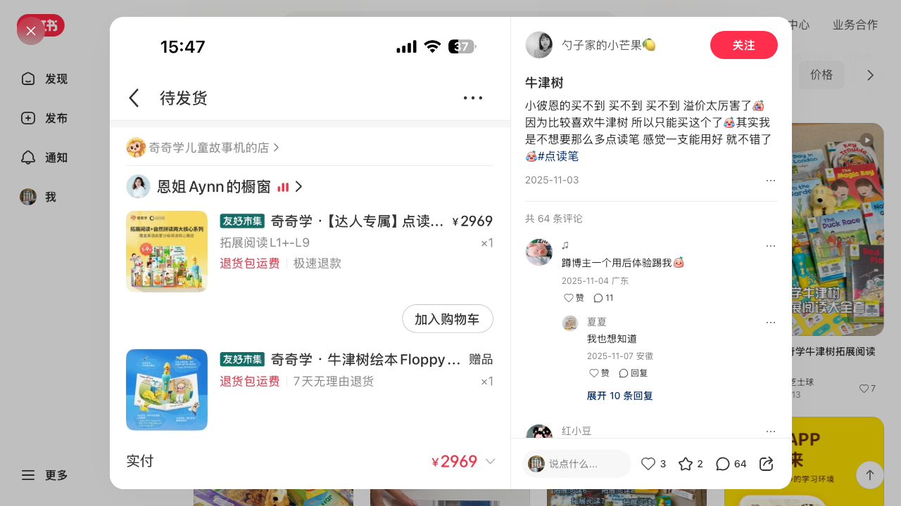
小彼恩的买不到 买不到 买不到 溢价太厉害了 因为比较喜欢牛津树 所以只能买这个了其实我是不想要那么多点读笔 感觉一支能用好 就不错了#点读笔
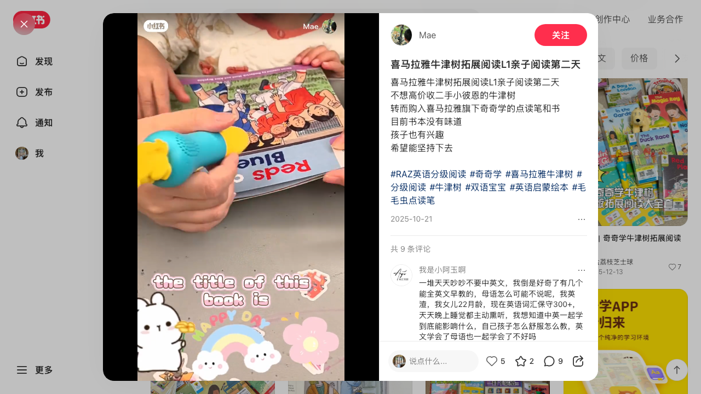
喜马拉雅牛津树拓展阅读L1亲子阅读第二天 不想高价收二手小彼恩的牛津树 转而购入喜马拉雅旗下奇奇学的点读笔和书 目前书本没有味道 孩子也有兴趣 希望能坚持下去 #RAZ英语分级阅读 #奇奇学 #喜马拉雅牛津树 #分级阅读 #牛津树 #双语宝宝 #英语启蒙绘本 #毛毛虫点读笔
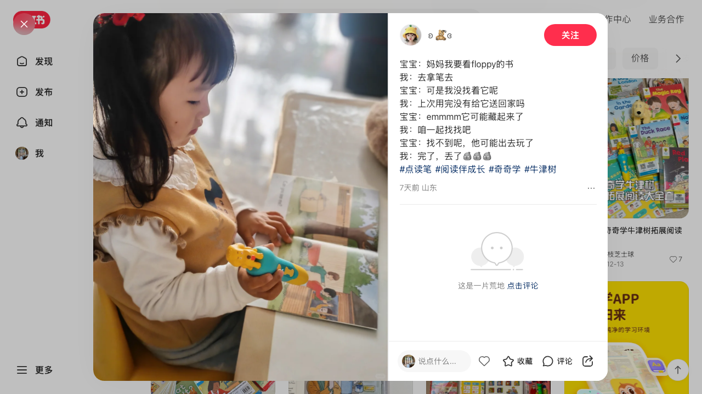
宝宝：妈妈我要看floppy的书 我：去拿笔去 宝宝：可是我没找着它呢 我：上次用完没有给它送回家吗 宝宝：emmmm它可能藏起来了 我：咱一起找找吧 宝宝：找不到呢，他可能出去玩了 我：完了，丢了 #点读笔 #阅读伴成长 #奇奇学 #牛津树
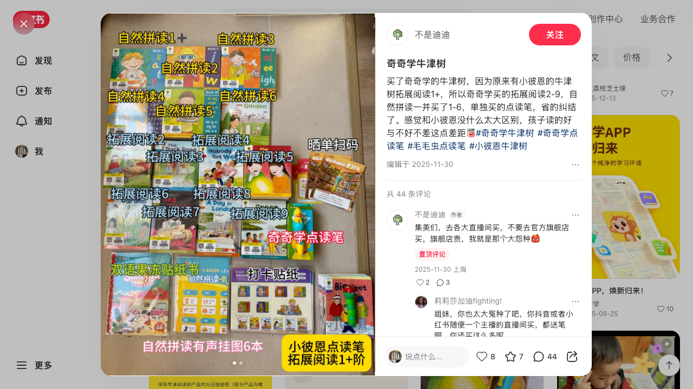
买了奇奇学的牛津树，因为原来有小彼恩的牛津树拓展阅读1+，所以奇奇学买的拓展阅读2-9，自然拼读一并买了1-6，单独买的点读笔，省的纠结了。感觉和小彼恩没什么太大区别，孩子读的好与不好不差这点差距#奇奇学牛津树 #奇奇学点读笔 #毛毛虫点读笔 #小彼恩牛津树
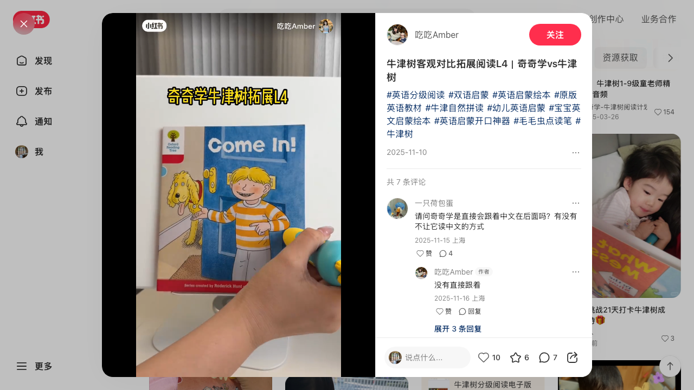
#英语分级阅读 #双语启蒙 #英语启蒙绘本 #原版英语教材 #牛津自然拼读 #幼儿英语启蒙 #宝宝英文启蒙绘本 #英语启蒙开口神器 #毛毛虫点读笔 #牛津树
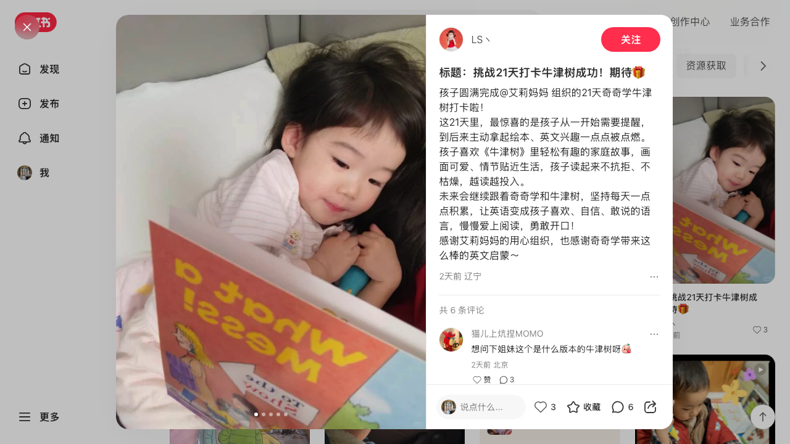
孩子圆满完成@艾莉妈妈 组织的21天奇奇学牛津树打卡啦！ 这21天里，最惊喜的是孩子从一开始需要提醒，到后来主动拿起绘本、英文兴趣一点点被点燃。 孩子喜欢《牛津树》里轻松有趣的家庭故事，画面可爱、情节贴近生活，孩子读起来不抗拒、不枯燥，越读越投入。 未来会继续跟着奇奇学和牛津树，坚持每天一点点积累，让英语变成孩子喜欢、自信、敢说的语言，慢慢爱上阅读，勇敢开口！ 感谢艾莉妈妈的用心组织，也感谢奇奇学带来这么棒的英文启蒙～
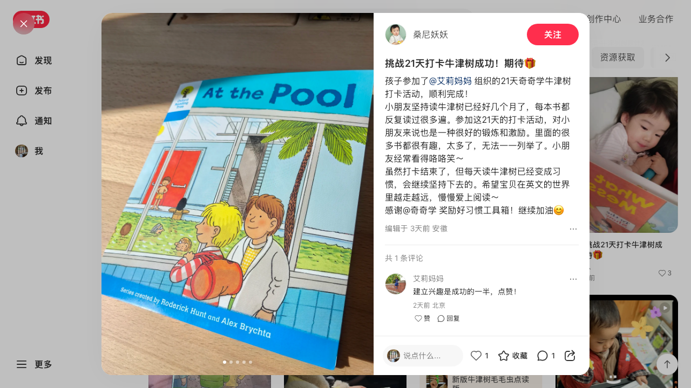
孩子参加了@艾莉妈妈 组织的21天奇奇学牛津树打卡活动，顺利完成！ 小朋友坚持读牛津树已经好几个月了，每本书都反复读过很多遍。参加这21天的打卡活动，对小朋友来说也是一种很好的锻炼和激励。里面的很多书都很有趣，太多了，无法一一列举了。小朋友经常看得咯咯笑～ 虽然打卡结束了，但每天读牛津树已经变成习惯，会继续坚持下去的。希望宝贝在英文的世界里越走越远，慢慢爱上阅读～ 感谢@奇奇学 奖励好习惯工具箱！继续加油😊
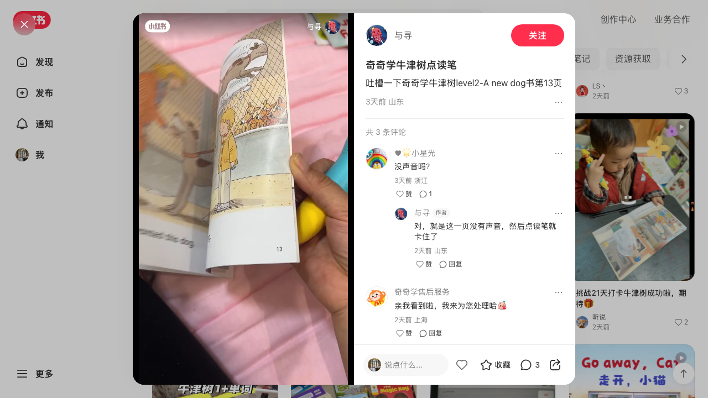
吐槽一下奇奇学牛津树level2-A new dog书第13页
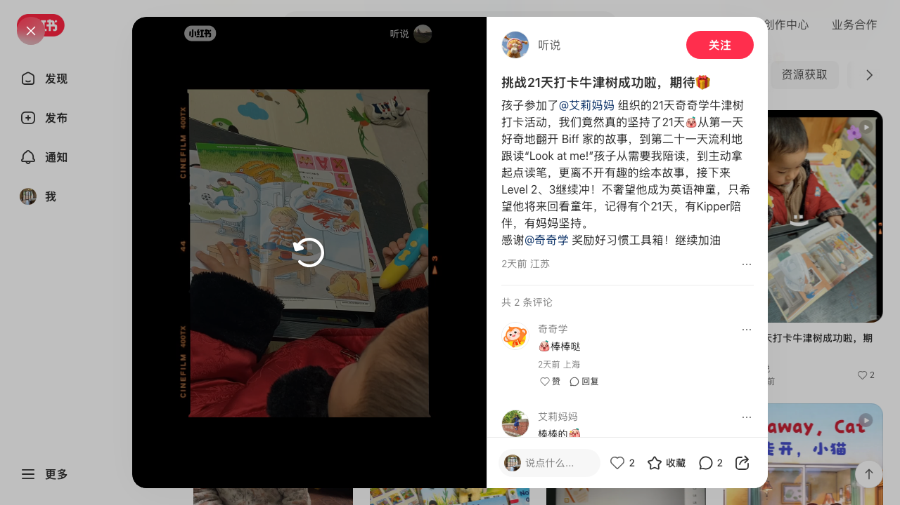
孩子参加了@艾莉妈妈 组织的21天奇奇学牛津树打卡活动，我们竟然真的坚持了21天从第一天好奇地翻开 Biff 家的故事，到第二十一天流利地跟读“Look at me!”孩子从需要我陪读，到主动拿起点读笔，更离不开有趣的绘本故事，接下来Level 2、3继续冲！不奢望他成为英语神童，只希望他将来回看童年，记得有个21天，有Kipper陪伴，有妈妈坚持。 感谢@奇奇学 奖励好习惯工具箱！继续加油
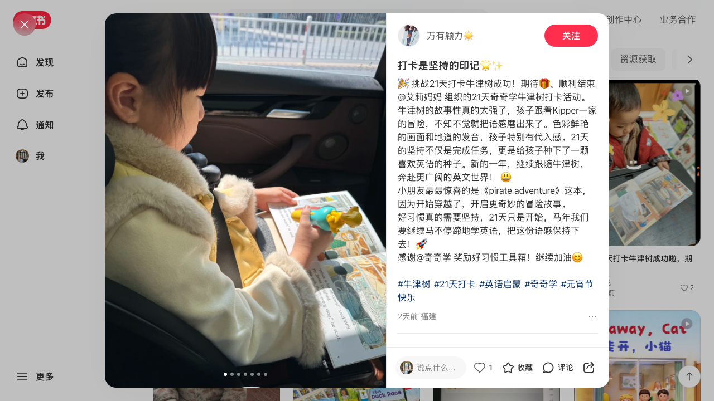
🎉 挑战21天打卡牛津树成功！期待🎁。顺利结束@艾莉妈妈 组织的21天奇奇学牛津树打卡活动。牛津树的故事性真的太强了，孩子跟着Kipper一家的冒险，不知不觉就把语感磨出来了。色彩鲜艳的画面和地道的发音，孩子特别有代入感。21天的坚持不仅是完成任务，更是给孩子种下了一颗喜欢英语的种子。新的一年，继续跟随牛津树，奔赴更广阔的英文世界！ 😃 小朋友最最惊喜的是《pirate adventure》这本，因为开始穿越了，开启更奇妙的冒险故事。 好习惯真的需要坚持，21天只是开始，马年我们要继续马不停蹄地学英语，把这份语感保持下去！🚀 感谢@奇奇学 奖励好习惯工具箱！继续加油😊 #牛津树 #21天打卡 #英语启蒙 #奇奇学 #元宵节快乐
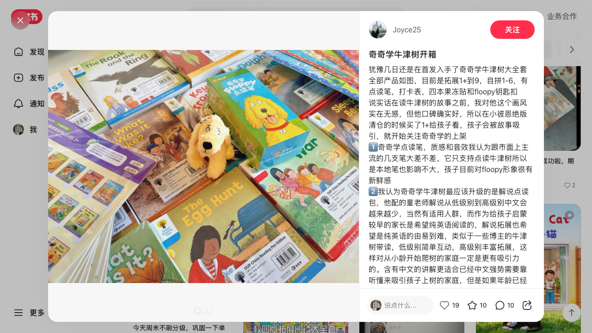
犹豫几日还是在首发入手了奇奇学牛津树大全套 全部产品如图，目前是拓展1+到9，自拼1-6，有点读笔，打卡表，四本果冻贴和floopy钥匙扣 说实话在读牛津树的故事之前，我对他这个画风实在无感，但他口碑确实好，所以在小彼恩绝版清仓的时候买了1+给孩子看，孩子会被故事吸引，就开始关注奇奇学的上架 1️⃣奇奇学点读笔，质感和音效我认为跟市面上主流的几支笔大差不差，它只支持点读牛津树所以是本地笔也影响不大，孩子目前对floopy形象很有新鲜感 2️⃣我认为奇奇学牛津树最应该升级的是解说点读包，他配的童老师解说从低级别到高级别中文会越来越少，当然有适用人群，而作为给孩子启蒙较早的家长是希望纯英语阅读的，解说拓展也希望是纯英语的由易到难，类似于一些博主的牛津树带读，低级别简单互动，高级别丰富拓展，这样对从小龄开始爬树的家庭一定是更有吸引力的。含有中文的讲解更适合已经中文强势需要靠听懂来吸引孩子上树的家庭，但是如果年龄已经大一点了，我觉得目前童老师的讲解和一堆前后的音效有点效率低下了。 若日后能有英文讲解点读包的更新应该在口碑上和小彼恩不会是五五分的现状了 3️⃣是否现在入全套，如果孩子年龄到了，可...
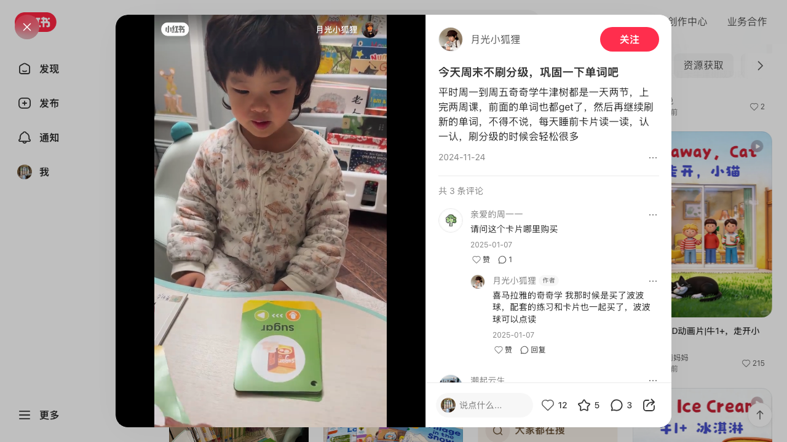
平时周一到周五奇奇学牛津树都是一天两节，上完两周课，前面的单词也都get了，然后再继续刷新的单词，不得不说，每天睡前卡片读一读，认一认，刷分级的时候会轻松很多
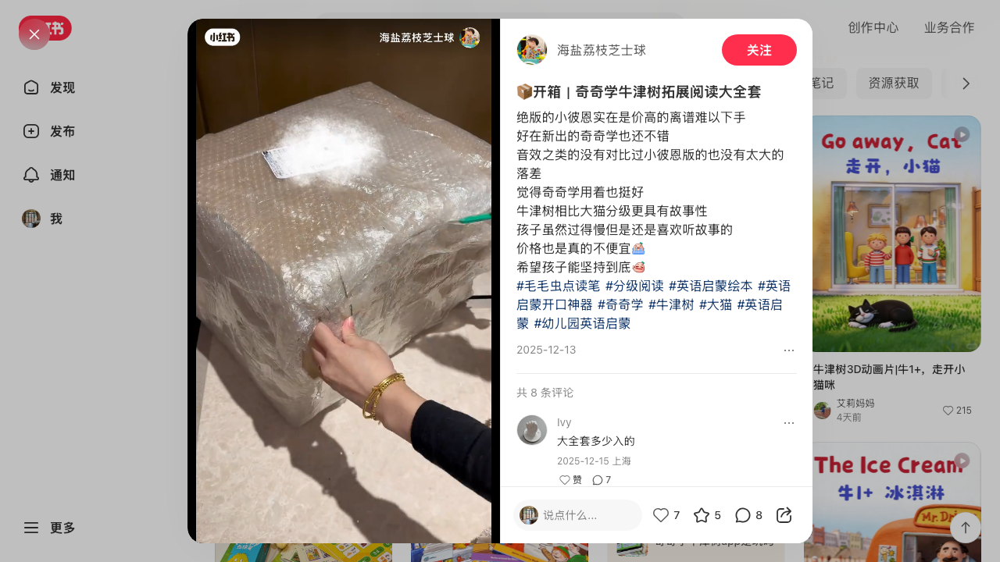
绝版的小彼恩实在是价高的离谱难以下手 好在新出的奇奇学也还不错 音效之类的没有对比过小彼恩版的也没有太大的落差 觉得奇奇学用着也挺好 牛津树相比大猫分级更具有故事性 孩子虽然过得慢但是还是喜欢听故事的 价格也是真的不便宜 希望孩子能坚持到底 #毛毛虫点读笔 #分级阅读 #英语启蒙绘本 #英语启蒙开口神器 #奇奇学 #牛津树 #大猫 #英语启蒙 #幼儿园英语启蒙